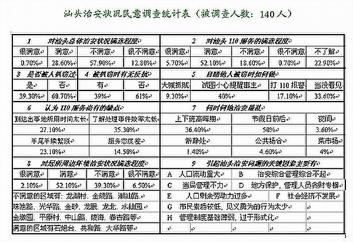

汕头治安状况的调查及思考
课题研究背景 课题研究目的 研究实践过程 调查研究报告 实践体会 附件
(研究小组成员：陈佳妮 许玉莹 林静 林芝英 胡健)
一 课题研究背景
改革开放以来，汕头的经济蓬勃发展，人们的生活也一天天好起来。在关心衣食住行的同时，市民也开始关心自己生活环境的优劣。细心的人不难发现，汕头的地方治安状况也在悄然变化着，治安问题也自然地成为人们关心的重要话题。
近几年来，由于大量外来民工的涌入，而汕头市实际所需劳动力人口量有限，本地劳动力过剩，人口流动量激增，贫富悬殊加剧，治安管理不够协调，物质文明建设迅速发展，而精神文明相对滞后等原因，这几年，汕头的治安状况多多少少有不尽人意之处。特别是在节假日前后，治安状况尤为不佳。但与别的城市相比，又算是良好。不同的人有不同的看法，治安成了人们茶余饭后频频谈及的一个话题。
我们的这次社会调查，正是针对汕头治安这个市民最为关心的话题而展开的。
作为中学生，我们即将踏入社会，首先要关心社会、了解社会。治安问题与每个人息息相关，所以我们选取这个倍受社会关注的话题作为研究对象，用我们学过的知识来进行分析讨论。
汕头治安状况到底如何？市民的反映又如何？有关部门的看法又如何？让我们一起来走进社会，了解一下汕头治安的真实面目吧！
二 课题研究目的
我们既已选择汕头治安这一研究对象，那么我们必然要定下研究目的。
首先，我们要通过查找大量资料，讨论分析问题所在。接着根据所存在的问题有针对性地制定调查问卷，进行民意调查。然后统计调查结果，采访有关专家。最后进行整理。
这些计划最终目的只有一个，那就是了解汕头治安状况，知道发展的趋势、市民的意见和有关部门的措施,并进行理性分析,做出一份比较完整的，比较科学的研究报告。
对汕头目前的治安状况，在感性认识上，各人都能看到它好的或是坏的一面，但未必每个人都能深刻的、全面的看待这一问题。看待任何事物都要一分为二进行分析，我们研究汕头治安，目的就是为了全面地理性地认识这个社会问题，能够更好地抓住问题的关键，形成我们社会实践后独立的较为成熟的思考。我们也希望通过这次研究，能够以中学生的名义，向社会提出我们的倡议，以尽我们作为一名汕头公民的微薄之力。
我们研究一个事物，都有我们的目的。因为只有达到研究目的，才能提出更好的建议，有助于我们社会的发展。为着这一目的，我们将认真进行研究实践，实现这次活动的真正意义。
三 研究实践过程
第一阶段 讨论确立调查主题及实施步骤
2002年2月4日
本组成员通过讨论，决定以汕头治安为研究对象，作完成一份题为《汕头治安状况的调查及思考》的调查研究报告。理由是此次活动开始时间在接近春节时，是一年中治安最差的时候，很多市民对汕头的治安相当关心，但对汕头的实际治安状况又相当模糊，我们借此机会对汕头的治安作一次调查。调查主题确立。
2月5日
组员一起讨论报告提纲及实施步骤，讨论后初步确定调查报告的提纲如下：
1 简介汕头治安概况
2 分析民意调查结果及专家意见
3 对调查的结果做总结并进行详细的分析
确立提纲后，组长分配工作，共同完成研究报告。
2月6日-2月10日
到图书馆、网上查找资料，总结出汕头治安目前的几大问题。之后并制定了调查问卷，印刷140份。
第二阶段 按步骤实施计划
2月7日--2月20日
我们开始拿着调查问卷上街分发给市民填写，虽遭到少数市民的拒绝，但大部分还是接受了我们的社会调查。调查过程中我们发现，拒绝填写的大多是中年人，而且不是不愿填写，而是因为不敢填写，是在明哲保身。相反，最配合调查的要数那些年轻人了，接受调查时十分爽快，拿过调查问卷和笔立刻就填。这种反差很值得我们思考。
民意调查结束后，立即进行统计，制作成表格。
2月21日
带着我们进行民意调查的结果，我们来到公安局采访了有关领导。
第三阶段 总结研究报告
我们根据查找所得资料，社会民意调查结果，采访所得资料，总结出论文。
四 调查研究报告
一 汕头治安概况
汕头，这座南方的海滨城市，自从成立为经济特区后，经济迅速发展。随着物质文明不断丰富着我们的生活，人们逐渐关心起衣食住行以外的社会问题。譬如治安，这是与每个人息息相关的问题，随着经济的发展，治安问题越来越为人们所关注。
我们都希望居住的城市治安环境是良好的，但往往总会有不尽人意的问题出现。大量的资料事实表明，汕头的治安问题并非良好。尤其是近年来，许多人南下，造成了人口流动量大，而经济又没有发展到可承载如此大需求量的程度，一些违法犯罪行为必然要发生。
通过搜集大量的资料，并加以分析，我们总结出汕头目前治安方面存在的几个问题。
1 盲流问题
根据我们搜集到的材料，了解到目前汕头的盲流主要集中在城乡结合部。有资料显示，在汕头，光是龙湖区的官埭就有二千盲流。
那么，为什么这些盲流会集中在这些地方呢？为何解决不了这一问题呢？通过分析，我们认为：首先，城乡结合部远离市区中心，偏僻落后，盲流只能选择在此生存；其次，这些盲流多为三无人员，管理难度大；还有，经济得不到发展也是盲流增多的原因之一。
这些盲流，是社会治安的隐患，而盲流窝棚也影响了城市的环境卫生。对此，我们希望有关部门能够尽早解决这一问题。
2 抢劫盗窃案件频繁
在我们搜集到的众多资料中，大部分是与抢劫盗窃案件有关的。这是一个最危及人民群众生命财产安全的问题。
对于这一不容乐观的治安问题，我们分析讨论后，认为有几大原因。
（1） 近年来，汕头经济发展不景气，失业率上升，盗抢案件必然增多。
（2） 流动人口量增多，社会治安也会变复杂。
（3） 节假日前后，民工往来人口多，市民警惕性不高，是犯罪分子实施犯罪行为的好机会。
（4） 外来人员聚集一处找不到工作，又多在偏僻处，难免治安案件不发生。
主要原因我们归结为这几个。对这些情况，我们觉得值得思考，建议有关部门能够根据这些原因找出解决问题的措施。
3 治安案件的区域性问题
据我们的调查分析，汕头的治安案件有区域性。也就是说，大多治安案件主要发生在城乡结合部，还有治安管理较为混乱的区域。在一些人流量大的路段或是人烟稀少处，治安案件也是频频发生。
而在有小区管理的住宅区和管理得力的地方，治安状况则十分良好。这其中是存在必然性的。因为治安案件发生率高的区域多是地处偏僻市郊，管理有一定的难度，这是在所难免的。
我们就居住在这个城市，每天穿梭于这样的人来人往中；而且有相当一部分人就住在市郊。对于这样的危机，我们怎能不担忧呢？市民们的反映如何呢？而有关部门的领导又有何看法呢？
二 市民的反映与领导的回答
作为这个城市的市民，他们对于汕头的治安了解多少呢？对于汕头这样的治安状况又有何反映呢？对此，我们专门设计了一份调查问卷，走上街头，访问了一部分市民。我们的问卷形式如下：
| 关于汕头治安状况的民意调查 1 您对汕头总体的治安状况满意吗？ 2 您对您所居住的街道的治安状况满意吗？（附：请写下您所居住的街道 或居委 ） 3 您对汕头110的服务满意吗？ 4 为什么不满意？（若上题选A或B，此题可不作答） 5 您是否被人扒窃过？ A 是 B 否 6 您有没有进行反抗以拿回被窃财物？ A 有 B 否 7 您是否目睹过他人被窃？ A 有 B 没有 8 您目睹他人被窃时，你是怎么做的？ 9 您觉得汕头哪个时候的治安最乱？ 10 您得引起汕头治安问题的最关键因素是什么？（可多选） |
被访的市民中，有从事各种各样职业的人；有老人，也有孩子。
我们在调查的过程中也遇到了不少困难，譬如有市民不肯接受调查，不敢说出自己的心声。也有市民一谈到治安问题，十分气愤，抱怨了很多。但总体来说，调查过程还是顺利的。我们还因此了解了不少状况。
有位老奶奶跟我们说她曾被人用过迷药，被窃了价值一千多块钱的首饰。还有很多市民跟我们讲了窃贼的许多种新奇的作案手段，令人心寒。而盗贼也越来越大胆，明抢暗盗，让我们觉得治安问题确实不容乐观。这些恶劣行为不仅给社会带来危害，也危及了人民群众的生命财产安全，这不得不引起我们的重视。
也有一些市民向我们提出了一些建议以及看法，有些建议是极好的。
对于市民的这些真实的心声，我们都认真聆听，并做了记录。可以看出，他们作为汕头的市民，对于汕头的治安状况是非常关心的，甚至于十分的了解。是的，我们都应该关心我们的城市，有权利，也有自由提出我们自己的看法。真实的情况往往来自于百姓的反映，他们是社会的主流，所以我们有理由相信他们。
一连几天的调查完毕后，我们对问卷作了详细的统计，尽量使数据更精确些。
统计结果如下表：

http://www.ydtz.com/news/htm/table.gif
参加这次社会调查活动，不仅培养了我们自主动手的能力，而且培养了我们的社会实践能力。在这次活动中，我们学会了有计划有条理地做事，懂得运用我们学过的知识去分析问题。
在这个活动中，我们走近社会，每一个步骤对我们来说都是充满了挑战。例如在民意调查中，我们不少被拒绝过，这也使我们懂得了如何与人沟通，如何使市民说出自己的心声。另外，我们在访问公安局有关人员时，我们也学会如何面对面与人交谈，获取自己想要的信息。公安局的有关人员也热情地接待了我们，为我们讲解治安问题的成因，解决措施等，使我们对汕头的治安状况有更深入的了解。
在最后的总结报告中，我们从大量的资料中筛选我们想要的部分，结合文章的内容再加入图片、民意调查结果、采访结果等。我们不断地进行修改、加工，力求真真切切反映事实。开始整个过程只是一个框架，经过我们逐项落实，这个框架逐渐充实起来。
活动已经结束了，我们完成的是一份调查报告，得到的却是极有意义的经验与社会实践能力。
* 附件：
采访记录
（时间：2002年2月21日）
Q：现在汕头的治安主要存在什么问题？
A：主要是"三无"，"四清"人员，"六合彩"，"双抢"，盗窃自行车，摩托车等问题 。这都是些不好的方面。
Q：以前有作过这方面的调查吗？
A：没有。我们只是根据每年治安部门查处的案件来进行统计，或者是根据阶段性 治安问题出现的一些情况，我们会组织清理。例如明天，我们就要组织一次清理 。在前段时间，市区盗窃摩托车案件比较多的情况下，市区，公安机关都有组织 专项性的打击整治，而且取得了成效。例如整治之前市区每天有十多二十辆摩托 车被盗，经整治后，这个数目降至每日只有五，六辆摩托车被盗。 Q：引起汕头 治安问题的主要原因是什么？据我们在市民中了解，主要是流动人口多，外来人 员多，对此你怎么看？
A：外来人员是一个方面。因为外来人员流动量多，给社会带来压力，当社会无法 解决这些人的就业问题时，这些人为谋生路，就可能铤而走险，走上犯罪的道路 。导致这种局面的原因有很多，政府无法提供就业机会也是一个方面。不要说为 外地人，就是为本地人提供就业机会也很难。
Q：很多市民反映，治安问题与社会经济的发展也有关系。比如失业的人多，剩余 劳动力多等原因。对此你怎么看？
A：是的，经济不好也是一个方面，因为社会服务机构无法消化这些剩余的劳动力 。
Q：因为这方面的原因，那么当前如果要解决这些问题的关键因素是什么？
A：从哲学的观点来看，事物分为主观和客观两个方面。主观方面，解决犯罪问题 ，一是要解决社会就业问题，另外还要增大社会教育面，使市民的素质得到提高 。市民的素质提高了，就不会铤而走险，走上犯罪的道路。另一方面，执法部门 ，如公安机关，也要及时了解市民的动态如何，为人们提供就业机会。从打击犯 罪方面来说，增加打击的力度，也能够在客观上遏制案件的发生。中央从去年开 始实行的两?quot;严打"斗争，就是这个原因。希望通过"严打"来遏制犯罪恶化的状 况，使治安状况有所好转。这也是一个方面。
Q：汕头现阶段的犯罪率是多少？
A：对于汕头的犯罪状况，汕头人可以说是"身在福中不知福"。根据汕头经济状况 来说，因为犯罪率是跟经济发展状况成正比例，经济发展得越好，犯罪率就越高 ，这是必然的。经济落后的时代，如六、七十年代，人们连饭都吃不饱，哪有气 力去犯罪，跑都跑不动。经济发展越快，犯罪率就越高。如以前没有汽车，自然 也就没有盗窃汽车的案件。所以，汕头的治安状况在全省，乃至全国都是最好的 。我们有统计过，去年和前年，汕头每个月的凶杀案是2-3宗，而在东莞平均每 天就有2-3宗。但东莞的经济比汕头要好得多，流动人口也多，东莞有几百万的 流动人口，而汕头现在最多也是一二十万，这也是一个原因。所以，汕头的治安 状况可以算是不错的了。但是汕头地方太小，哪里要是出了凶杀案，或是哪里自 行车相碰，马上会传遍整个汕头。但汕头的治安状况总体说还是算好的。
Q：在这些犯罪案件中，作案者大部分是汕头本地人还是外来人员？
A：以前来说是外地人占大多数，但现在总体比例外来人员还是要超过50%。特别是 一些一般案件中，如盗窃自行车，摩托车等，汕头本地人几乎是零，基本是外地 人。如盗窃自行车有98%以上是江西人，而盗窃摩托车就大多数是周边城市，例 如惠来，陆丰，揭阳，饶平等地区的人，但汕头本地人很少。
Q：对于见义勇为现象，汕头人在这方面表现如何？
A：从你们的民意调查表中可以看出，汕头人都抱着"自家人打扫自家门"的态度， 认为"事不关己，高高挂起。"而对于见义勇为现象，汕头人还是欠缺的。心里有 正义感，行动上却体现不出来。人们嘴上会说，做的人却很少。比如说，看到有 人在盗窃，大都是不敢喊出来的。
Q：在治安管理这方面有些什么新的措施？
A：我们每年都会要求派出所的民警到地段去，特别是对于一些中小学校组织一些 法制教育。你们学校应该也有。如一些地段民警会给学生上一些有关交通法规或 是治安方面的课。所以说汕头的公安部门还是比较关心青少年下一代的成长的。
Q：汕头的住宅小区越来越多，治安方面也出现过一些问题，大多数是金砂，龙湖 等较偏僻的地方，对此你有什么看法？
A：这些"城中村"，基本上是出租屋，外来人员非常多，公安部门在管理上也有些 困难。这些外来人口行踪不定，无法跟踪管理。
Q：那么，在这些地区是否加强管理，
让市民住得更放心？
A：这一点是有的，不仅派出所增加了巡逻人员，保安人员也有所增加。